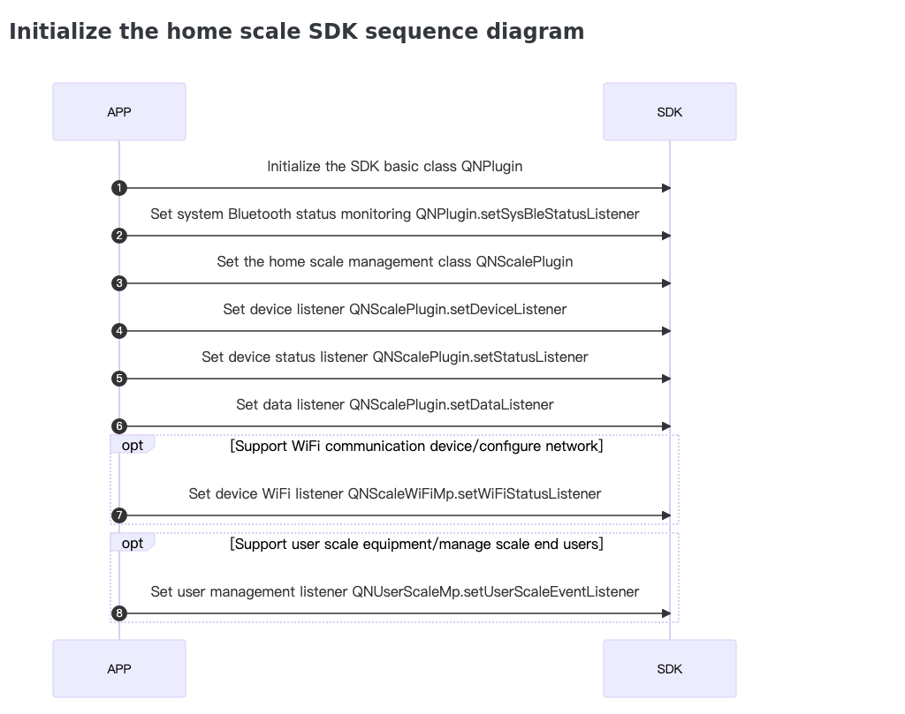
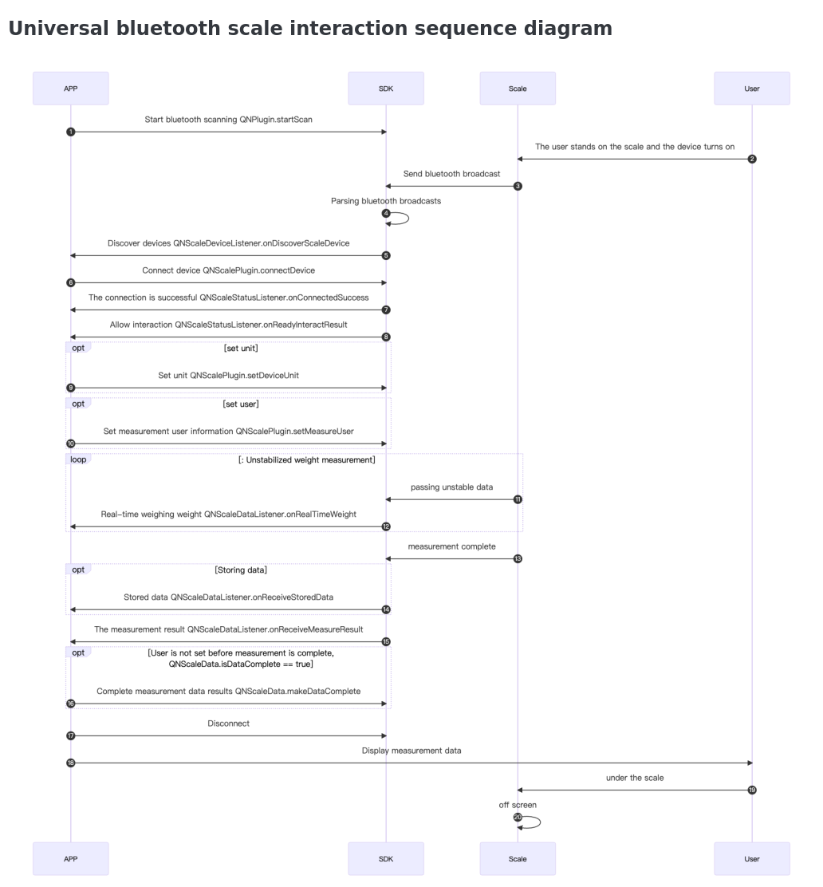
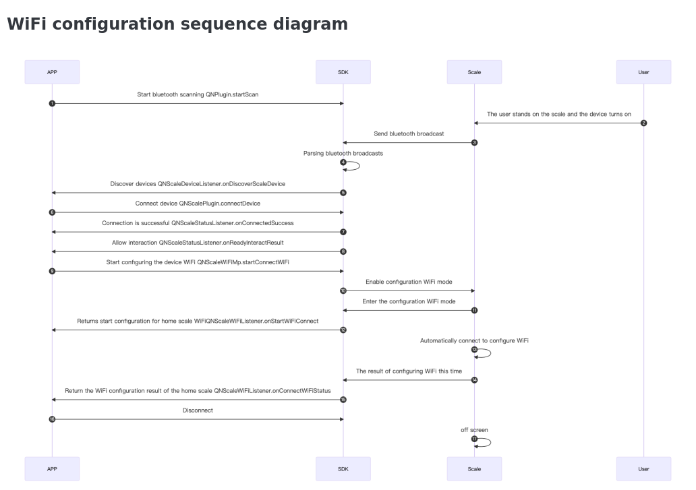
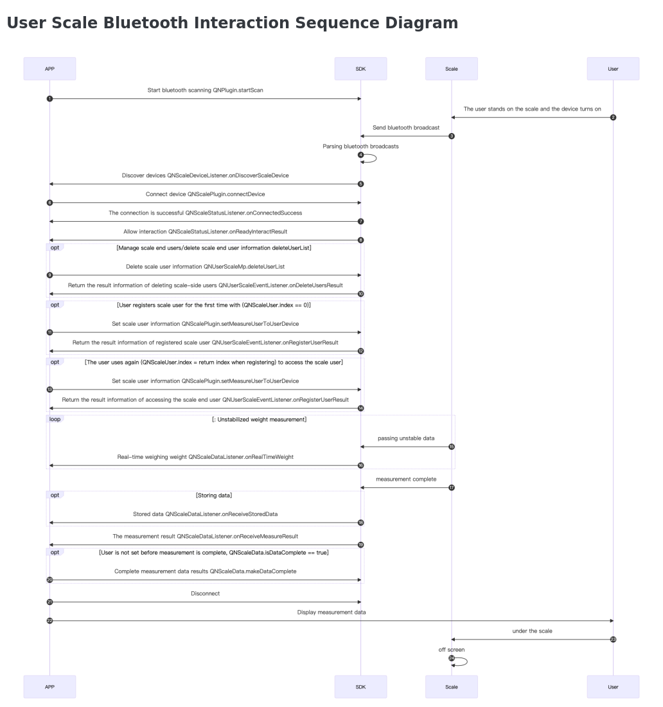

Home scale product introduction
Household scales are a general term for a series of smart body fat scales mainly for home applications launched by our company.
In actual use, household scales are divided into Bluetooth scales and Bluetooth WiFi dual-mode scales according to the data communication method; according to whether the scale terminal supports storing user information, they are divided into common scales and user scales.
General Bluetooth communication function
All of our home scale devices support Bluetooth communication. The APP can establish a connection with the home scale through the SDK, and can obtain real-time changes in the status of the Bluetooth connection and the working status of the scale. It can measure the weight in real time, the measurement results, and the stored data recorded by the scale (up to 20 pieces).
Support WiFi communication function
On the basis of supporting the Bluetooth communication function, it will also support the WiFi communication function. To use the WiFi communication function, the APP needs to call the SDK to configure QNWiFiInfo for the scale. The APP server needs to connect to Docker provided by our company. After the configuration is completed, the measurement data generated by the scale without connecting to Bluetooth will actively connect to the previously configured WiFi after the measurement is completed. serverUrl server address.
Support storage scale user function
Compared with ordinary scales, most of the scales can only display weight, and other measurement data need SDK to cooperate with the working principle of display. For scales that support user measurement on the scale end, after setting the user information on the scale end, the user can use the measurement function without the Bluetooth connection. The scale will display the measurement indicators after the measurement. The results usually include body fat percentage, bmi, skeletal muscle and other indicators. , to improve user experience. Regarding the user setting of the scale end, it is divided into two usage scenarios: first-time registered scale end user and re-used access scale end user:
- For the first time to use the registered scale end user, the scale end can record up to 8 user information. When a user uses it for the first time, after the scale is successfully connected and allowed to interact with the scale, you need to call setMeasureUserToUserDevice to synchronize user information to the scale, you need to
noteQNScaleUser.index == 0, the built-in SDK performs the operation of registering the scale end user. The process of registering a user will call back to the APP through the real-time status of QNUserScaleEventListener. When the user registers successfully, the APP needs to record the index returned by the SDK at this time to access the scale end user when using it again. After the user is successfully registered, the connection SDK will be built in User Access Actions. - Re-use users who access the scale end, that is, users who have registered on the scale end, when they use the scale again, they need to connect to the scale successfully, and after allowing interaction with the scale, they need to call setMeasureUserToUserDevice QNScaleUser.index needs to be assigned the index that was called back by the SDK during the last registration. At this time, the SDK will be built into the access user operation , the access user process will be called back to the APP through the real-time status of QNUserScaleEventListener.
Sequence diagram of home scale use



